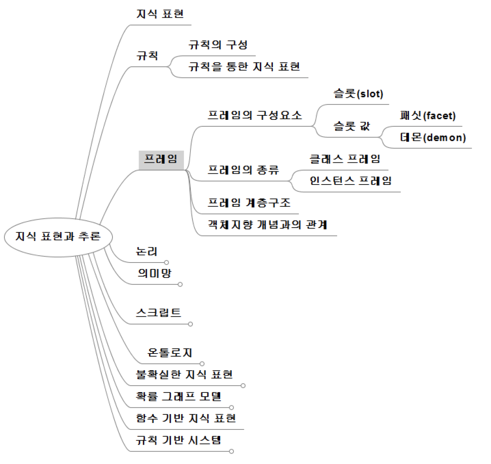

10th
규칙 (rule)
규칙의 구성
조건부
둘 이상의 조건을 AND 또는 OR로 결합하여 구성 가능
- IF <condition 1> AND <condition 2> AND <condition 3> THEN
- IF <condition 1> OR <condition 2> OR <condition 3> THEN
결론부
여러 개의 판단 또는 행동 포함 가능
- IF <condition 1> THEN <conclusion 1> AND <conclusion 2> AND <conclusion 3>
규칙을 통한 지식 표현
인과관계
원인을 조건부에 결과는 결론부에 표현
- IF 연료통이 빈다 THEN 차가 멈춘다
추천
상황을 조건부에 기술하고 이에 따른 추천 내용을 결론부에 표현
- IF 여름철이다 AND 날이 흐리다 THEN 우산을 가지고 가라
지시
상황을 조건부에 기술하고 이에 따른 지시 내용을 결론부에 표현
- IF 차가 멈추었다 AND 연료통이 비었다 THEN 주유를 한다
규칙을 통한 지식 표현
전략 (strategy)
일련의 규칙들로 표현
이전 단계의 판정 결과에 따라 다음 단계에 고려할 규칙이 결정
- IF 차가 멈추었다 THEN 연료통을 확인한다 AND 단계 1을 끝낸다.
- IF 단계 1이 끝났다 AND 연료통은 충분히 찼다 THEN 배터리를 확인한다 AND 단계2를 끝낸다.
휴리스틱 (heuristic)
경험적인 지식을 표현하는 것
전문가적 견해는 최적을 항상 보장하는 것이 아니고 일반적으로 바람직한 것을 표현
- IF 시료가 액체이다 AND 시료의 PH가 6 미만이다 AND 냄새가 시큼하다 THEN 시료는 아세트산이다.
프레임 (frame)

민스키 (M. Minsky, 1927 ~ 2016)가 제안한 지식표현 방법
특정 객체 또는 개념에 대한 전형적인 지식을 slot (슬롯)의 집합으로 표현하는 것

프레임의 구성요소
슬롯 (slot)
객체의 속성 (attribute)을 기술하는 것
슬롯 이름 (slot name)과 슬롯 값 (slot value)으로 구성
- 슬롯 이름 - 속성 이름
- 슬롯 값 - 속성의 값
슬롯 값 (slot value)
- 복수 개의 패싯(facet)과 데몬(demon)으로 구성
패싯 (facet)
측면 또는 양상을 의미
속성에 대한 부가적인 정보를 지정하기 위해 사용
패싯 이름과 패싯 값의 쌍으로 구성
패싯 이름
- value - 속성값 (수, 문자열, 다른 프레임의 포인터 등)
- data-type - 속성값의 자료형
- default - 디폴트 값 (속성값이 주어지지 않을 때 사용되는 초기 값)
- require - 슬롯에 들어갈 수 있는 값이 만족해야 할 제약 조건

데몬 (demon)
지정된 조건을 만족할 때 실행할 절차적 지식 (procedure)을 기술
슬롯 값으로 데몬 실행조건과 데몬 이름의 쌍
데몬 실행 조건의 예
- if_needed - 슬롯 값을 알아야 할 때 (즉, 사용하려고 할 때)
- if_added - 슬롯 값이 추가될 때
- if_removed - 슬롯 값이 제거될 때
- if_modified - 슬롯 값이 수정될 때

프레임의 종류
클래스(class) 프레임
- 부류(class)에 대한 정보 표현
인스턴스(instance) 프레임
- 특정 객체에 대한 정보 표현
프레임의 계층구조 (hierarchy)
상위 프레임
- 클래스를 나타내는 프레임
하위 프레임
- 하위 클래스 프레임 또는 상위 클래스 프레임의 객체
- 상위 프레임을 상속(inheritance) 받음


프레임과 규칙을 결합한 지식 표현
프레임은 특정 개념이나 대상에 대한 속성들 표현
- 관련된 속성들을 하나의 덩어리로 관리
규칙을 사용하여 조건적인 지식 표현
- 데몬에 규칙 사용
- 또는 규칙의 조건부나 결론부에서 프레임 사용
대부분 규칙기반 시스템에서 객체(object) 개념 사용
- 객체의 표현에 프레임 사용 가능
프레임 vs 클래스와 객체
클래스와 객체
- 소프으웨어 개발에 있어서 모듈화, 재사용성 및 유지보수의 용이성을 고려한 프로그래밍 개념
- 정보은닉 등 정보 접근에 대한 제한 매커니즘
프레임
- 사람이 특정 대상에 대해 갖는 지식의 표현을 목표
- 슬롯의 특정 상황에 따라 자동으로 호출되는 데몬 개념
논리 (logic)
말로 표현된 문장들에 대한 타당한 추론을 위해, 기호를 사용하여 문장들을 표현하고 기호의 조작을 통해 문장들의 참 또는 거짓을 판정하는 분야
논리학의 역사
아리스토텔레스 (Aristotle, BC384 ~ BC322)
- 기호의 대수적 조작을 통해 추론을 하는 삼단 논법(syllogism) 도입
부울 (George Boule, 1815 ~ 1864)
- 명제 논리(propositional logic)의 이론적 기초 확립
프리게 (Gottlob Frege, 1848 ~ 1925)
- 술어 논리(predicate logic)의 이론적 기초를 확립
명제 논리 (propositional logic)

명제 (proposition)
참, 거짓을 분명하게 판정할 수 있는 문장
명제를 p, q 등과 같은 기호로 표현
명제 기호의 진리값(truth value)을 사용하여 명제들에 의해 표현되는 문장들의 진리값 결정
문장 자체의 내용에 대해서는 무관심, 문장의 진리값에만 관심
기본명제 (primitive proposition)
하나의 진술(statement)로 이루어진 최소 단위의 명제
복합명제 (compound proposition)
기본 명제들이 결합되어 만들어진 명제

논리식 (logical expression)
명제를 기호로 표현한 형식
명제기호, 참과 거짓을 나타내는 T와 F, 명제 기호를 연결하는 논리기호를 사용하여 구성

명제 논리의 구문
리터럴 (literal)

절 (clause)
리터럴들이 논리합으로만 연결되거나 논리곱으로 연결된 논리식

논리곱 정규형 (conjunctive normal form, CNF)
논리합 절들이 논리곱으로 연결되어 있는 논리식

논리합 정규형 (disjunctive normal form, DNF)
논리곱 절들이 논리합으로 연결되어 있는 논리식

정형식 (well-formed formula, wff)
논리에서 문법에 맞는 논리식